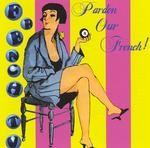

| Artist: | French TV |
| Title: | Pardon Our French |
| Label: | Pretentious Dinosaur CD007 |
| Length(s): | 60 minutes |
| Year(s) of release: | 2004 |
| Month of review: | [01/2005] |
| 1) | Everything Works In Mexico | 11.55 |
| 2) | Sekala Dan Niskala | 6.20 |
| 3) | The "Pardon Our French" Medley | 16.59 |
| 4) | Tears Of A Velvet Clown | 13.17 |
| 5) | When The Ruff Ruff Creampuffs Take Over | 11.41 |
Everything Works In Mexico has some slight salsa influences in the rhythms and key play, and a bit of gypsy in the violin even, but don't be fooled: the basis is experimental stuff.
Sekala Dan Niskala may have an African sounding title, the music has the sort of minimal basis Philip Glass material has. The use of instruments may differ (apart from the keys we get guitar and assorted percussive instruments), the neuroticism is akin to Glass's. As the track progresses we move into a gamalan type section, so even more percussion.
The "Pardon Our French" Medley is a medley of stuff by all French bands, some better known then others: Ange, Pulsar, Shylock, Carpe Diem, Atoll and Etron Fou Leloublan all get to stand in the light. Maybe the choice was influenced by the fact the used material is all copyright by Musea. But that could be just my sick mind working. Anyway, the renditions are not exactly the boisterious big symphonic sections as originally produced by the French bands. They are a bit strange, sometimes intimate, but definitely out of the ordinary. Having said that, this is the track with the most melodic sections, there are quite some bits with lingering guitars, build ups or otherwise continuous pieces.
Tears Of A Velvet Clown starts with a drum band, seemingly marching through town. From this we move indoors, to once again test assorted instruments including accordion, toy piano, and of course celesta. Whatever that may be. Through all this testing the band manage a brief spurt of melody, but most is experimenting. Don't get me wrong, I like the odd bit of experiment, but in this track French TV do seem to cross the line between music and experiment. When The Ruff Ruff Creampuffs Tak e Over is pretty much a continuation of the experiment of its predecessor. Loads of funny sounds and musical quips. Especially these last two tracks seem to be more a cerebral effort than they are a musical one.